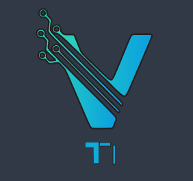

Olá, Eu sou
Olá, meu nome é Victor, e sou estudante de Sistemas para Internet. Desde muito jovem, sempre fui apaixonado pela área da tecnologia, e essa paixão me levou a escolher o curso que estou cursando atualmente. A cada novo aprendizado, me sinto mais fascinado pela infinidade de possibilidades que o mundo digital oferece e pelas soluções inovadoras que podemos criar.
Tenho um grande interesse por desenvolvimento web, especialmente na construção de sites e interfaces que sejam intuitivas e funcionais. Durante minha trajetória acadêmica, tive a oportunidade de trabalhar com diversas tecnologias, como HTML, CSS e outras ferramentas essenciais para o desenvolvimento de aplicações web.
Acredito que a tecnologia tem um papel fundamental em transformar o mundo e melhorar a vida das pessoas, e estou sempre em busca de aprimorar meus conhecimentos para me tornar um profissional capacitado e criativo. No futuro, espero continuar evoluindo na área e contribuir para a criação de soluções digitais cada vez mais impactantes.
O desenvolvedor web é o profissional responsável por criar e manter sites e aplicações online. Ele pode atuar no front-end, cuidando da interface e da experiência do usuário; no back-end, gerenciando a lógica de funcionamento e o acesso a dados; ou como full-stack, englobando ambas as áreas. Esse trabalho exige conhecimentos técnicos variados, capacidade de resolver problemas e atualização constante com novas tecnologias
Read Moreé a área do desenvolvimento web que se concentra na criação e manutenção da estrutura e lógica que permitem o funcionamento de sites e aplicações. Diferente do front-end, que lida com a interface visual, o back-end é responsável pelos processos que ocorrem nos bastidores, como o armazenamento e processamento de dados, a autenticação de usuários e a lógica de negócios.
é o desenvolvimento de aplicativos para dispositivos móveis, como smartphones e tablets, usando duas abordagens: nativa, que utiliza ferramentas específicas para cada sistema (iOS ou Android) e oferece melhor desempenho; e multiplataforma, que permite um único código para várias plataformas (com Flutter ou React Native). Esse trabalho envolve design para telas pequenas, otimização de desempenho e integração com funcionalidades do dispositivo.
Read MoreSe você achou interessante a minha história em quanto via o portfólio, entre em contato comigo, e vamos fazer a diferença juntos!
Read More 